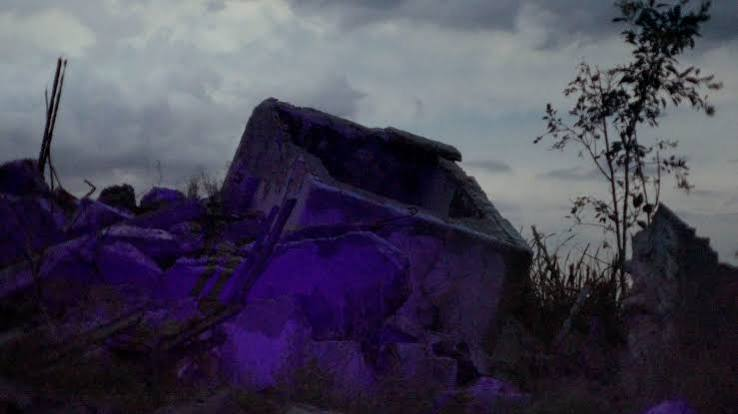
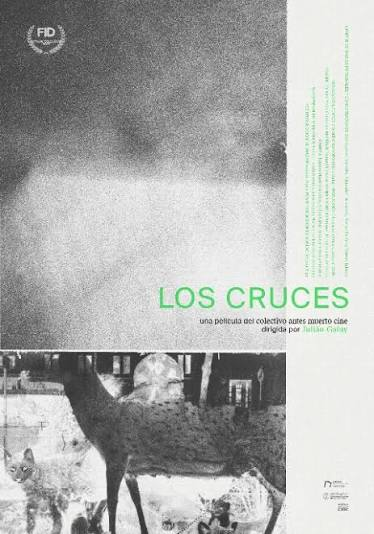
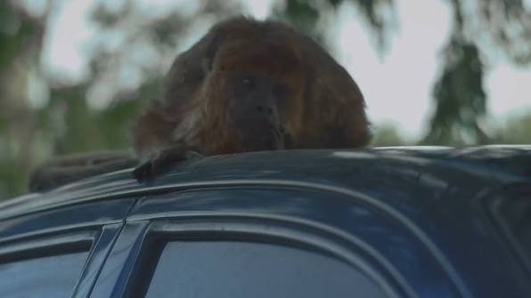
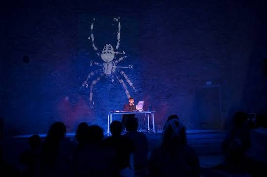

Desde la Gaceta Clara Zetkin dialogamos con Julián Galay, cineasta y director del documental Los Cruces. Una película donde humanos, arañas, pájaros, monos, motores, abejas y vibraciones conviven y se producen mutuamente. No hay sujeto filmador puro ni objeto pasivo: todos son partes de un mismo nicho simbiótico. La obra ofrece una investigación sensible sobre sueños, animales y ciudad, donde los cruces entre especies tejen una narrativa que combina lo científico y lo artístico de manera única.

JG: En principio, la película nació con cierta fascinación por cómo los animales se vinculaban con las ciudades. En un primer viaje a Berlín, tuve situaciones con zorros cruzando avenidas de hormigón a medianoche, y también con ratas, cuervos, palomas. Me interesaba trabajar con cómo la ciencia genera representación y pensamiento. Vengo de una herencia muy científica: desde chico tuve obsesión con zoológicos y museos de ciencias naturales, y eso me producía fascinación pero también contradicciones, porque hay una parte de la ciencia con carga colonial y violencia.
Descubrí toda una rama de la filosofía de la ciencia que observa a los científicos mientras ellos observan a los animales. Ese cambio de escala me conmovió. Y me interesaba profundizar en que no hay una ciencia buena o mala: en ciertos circuitos progresistas se ataca a la ciencia, y también desde el neoliberalismo y los nuevos fascismos. Yo siento un amor profundo por la ciencia, aceptando sus contradicciones. El tema no es la ciencia, sino cómo se hace ciencia. No es lo mismo una ciencia que mete cosas en jaulas que una que sale al encuentro. Hay tantas formas de hacer ciencia como científicos.
En cuanto a la relación con el arte, encuentro muchísimos puntos en común. Durante años estuve obsesionado con el proceso creativo, con cómo se piensa una obra, y también con el urbanismo, la arquitectura, la ingeniería. Hay procedimientos emocionales e intelectuales, algo de pensar con las manos y con el cuerpo, que es equiparable al trabajo científico. Aunque tienen diferencias metodológicas, me apropio con cierta irresponsabilidad de sistemas científicos para mis trabajos artísticos: la idea de experimento, de investigación sensible. Tener conversaciones profundas con gente de distintas disciplinas sobre el cómo se hace algo, más que el qué, me resulta muy motivador. Hay una contaminación cruzada muy estimulante.

JG: Hay una actualización de este experimento que se potenció con la pandemia: el encierro, la individualización extrema, la meritocracia, el pisar cabezas. Desde Antes Muertos Cine, nuestro colectivo, insistimos en presentar películas en un cine, que puede parecer anacrónico pero es juntarse en la oscuridad, compartir casi un sueño. Hay un compromiso, un ritual. Los cines están en extinción, como los bares, y eso tiene que ver con la solidaridad, lo colectivo, la amistad, los lazos. Ese es el contraexperimento frente a la estandarización y las imágenes de IA, que parecen no haber sido hechas por nadie. En el Bar Río es imposible que la IA imagine este espacio arqueológico, con años de historia. Nuestras películas proponen dejar preguntas, que cada espectador erre y relacione con su vida. Y acompañarlas, generar diálogo, conocer historias. Porque el experimento dominante es encerrarnos en nuestras cajas viendo el celular, que nos dice qué comprar y nos mete publicidad de genocidios o candidatos derechistas. Encontrarse a charlar, a ver una película, a leer en voz alta o tomar un café, es ir contra eso.
Además, algo que me shockeó: un alto porcentaje de gente ve Netflix con la pantalla disminuida o con dos o tres pantallas más, y por eso los textos se dicen en voz alta para que se pueda seguir mientras se cocina. Se subestima al que mira, se duerme el sentido perceptivo. Y eso es ideológico, es político. Hay una potencia en la atención y la escucha. Los Cruces, aunque es una película pequeña que no pretende solucionar nada, está pensada como un experimento perceptivo.
JG: Me crié en Exactas, en una guardería entre la Facultad de Arquitectura y Urbanismo y la de Exactas. Mis padres daban clase en Arquitectura, mi hermana estudiaba Biología. Voy a la universidad antes de hablar. De chico armaba laboratorios en mi cuarto con serpientes embalsamadas y tubos de ensayo, y decía que quería ser biólogo o físico. Luego apareció la música, la pintura. Pero mi approach a la música experimental, al arte sonoro, tiene mucho de la física: ondas, hercios, materialidad del sonido. Empecé a estudiar composición para escapar de la herencia, y años después me di cuenta de que estaba rodeado de ciencia y arquitectura, y que tenía que dejar de luchar con eso y hacerlo a mi manera, desde el arte.

JG: Haciendo Los Cruces, ya avanzado el proceso, me di cuenta de que era una película sobre el encierro: literal, pero también el encierro en el lenguaje, en la clasificación, en cómo aprendemos a leer y mirar. Bruno Munari decía "vemos palabras". Y por montaje, los panales de abejas se conectan con autopistas, las ciudades como panales, el hacinamiento en cajitas y en espejos negros. Todo lo horrible del tecnofascismo, los algoritmos, tiene que ver con la percepción, la palabra, el encierro.
En los 60 y 70 estaba muy presente lo subliminal, y la CIA trabajó con magos, con hipnosis, para hablarle al inconsciente. Eso no se terminó, está desarrolladísimo. Suena paranoico, pero creo que estamos siendo parte de un experimento brutal de exceso de información, imágenes y escucha. Argentina es un campo experimental terrible con Peter Thiel, Milei, y los grandes poderes miden cuánto aguanta la sociedad para exportarlo. Estamos insertos en capas y capas de experimentos menos inocentes de lo que creemos. Los Cruces, en su pequeña escala, intenta hablar indirectamente de todo esto.

JG: Mímesis es como el laboratorio abierto de Los Cruces. Mientras la película es un viaje narrativo, la instalación es un espacio de escucha atenta: diapasones, resonadores Helmholtz, imágenes escaneadas que revelan texturas ocultas, y una banda sonora que intenta captar el rumor del inconsciente colectivo de presas y depredadores. Es un experimento perceptivo en tiempo real. Ahí el espectador no es pasivo: su presencia completa la obra. El resonador Helmholtz que construyó Javier Bustos, por ejemplo, no es un objeto decorativo: vibra con las frecuencias del espacio y de quienes lo habitan. Hay algo de eso que me interesa: que el arte no sea algo que se mira, sino algo que te vibra. Y la curaduría de Sebastián Verea y el montaje de Sebastián Zanzottera logran que esa vibración tenga un ritmo, una respiración. Las filmaciones de Ronald Cerdas con el escáner añaden una mirada casi microscópica, como si estuviésemos viendo la piel del mundo.
En ese sentido, Mímesis es el contrapunto sonoro y espacial de Los Cruces. Mientras la película se proyecta en cines y se comparte colectivamente, la muestra invita a una inmersión más solitaria, más íntima, pero igual de convocante. Ambas obras se preguntan lo mismo: ¿qué estamos escuchando realmente cuando creemos estar escuchando? ¿Quién habla en nuestros sueños? ¿Qué música hacen los animales cuando no los observamos?